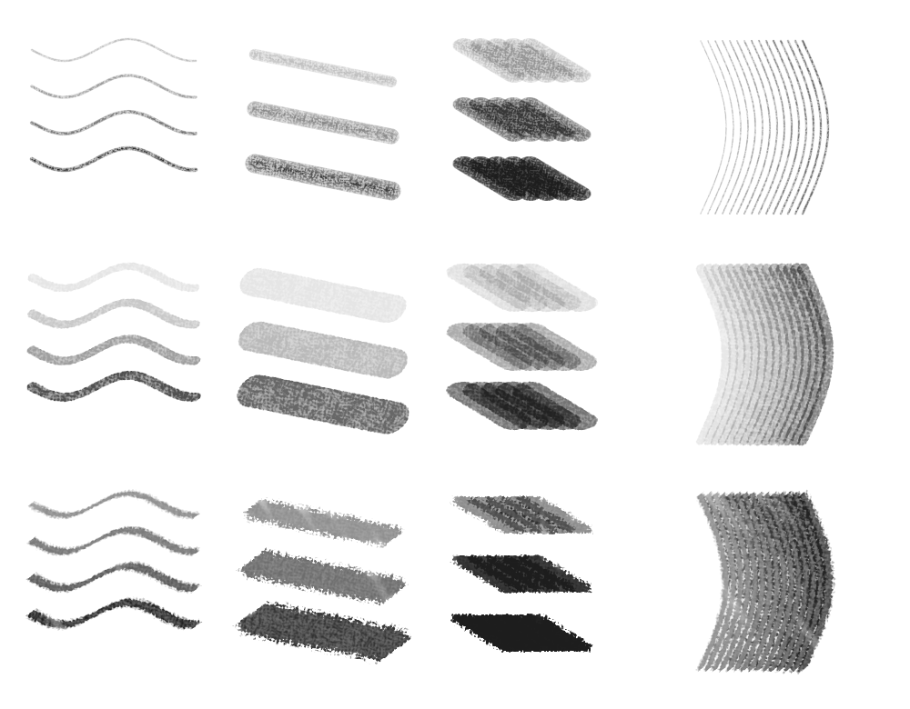

← Sketchpad galleryPencil, charcoal and knife — second pass.
Actual GPU-rendered strokes from Sketchpad. Hard round and marker retain their approved behavior. The three reworked tools use connected paper grain, revised pressure response and more restrained texture. The left column varies pressure and tilt; the right uses two mouse-style passes.
Reworked brushes
CharcoalDense, fine tooth
Palette knifeSolid paint · scraped edges
Alcohol markerTransparent chisel
Graphite pencilFine paper tooth
Hard roundSolid, crisp ink

Drawing studies
Rows: pencil, charcoal, palette knife. Columns: fine lines; increasing pressure with the same nib; one, three and six passes; curved hatching.

Open the brush library to choose a preset. Each remembers its size and opacity during the session. Shift-drag size adjustment and the existing pen-only controls work with all five.
Marker layers deepen after lifting and drawing another pass. This is a translucent marker approximation; solvent blending, wet paint mixing and charcoal smudging are not simulated.
Paper grain adapted from Krita brushes: Charcoal pencils by David Revoy, www.davidrevoy.com, CC BY 4.0. Converted the embedded pattern to grayscale; contact geometry and deposit equations are Sketchpad’s own.
Second-pass research: Faber-Castell graphite techniques · Krita pencil and charcoal examples · Gamblin knife marks.
Earlier research: Krita texture · Krita opacity/flow · Procreate brush settings · Copic nibs and layering